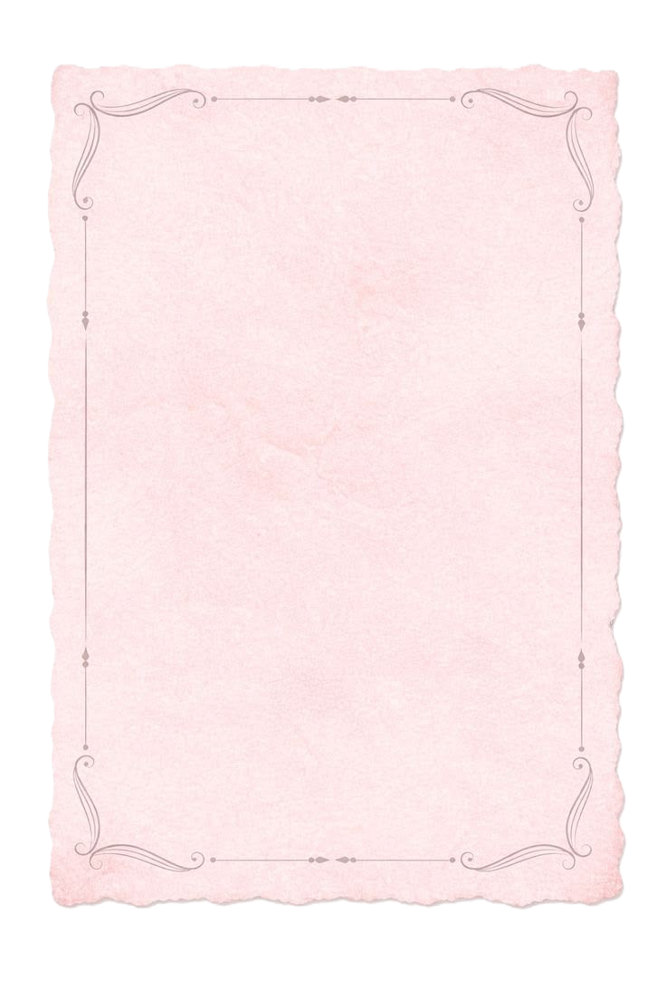

З днем народження, моє чудо!🥳❤️💋
Вітаю тебе від щирого серця з твоїм днем народженням, все сьогодні настає період невайбового віку, тобі вже не буде 16, але 17 це теж ще малалєтка, в тебе ще цілий рік, до серйозних цифер.😖
Бажаю тобі всього самого найкращого, щоб тебе оточували хороші люди, багато ґрошей, здоровʼя(з твоїм то баскетболом), щоб всі твої мрії збувалися, ну найкраще в твоєму житті вже трапилося(якщо ти не зрозумів то це я).
Я тебе дуже сильно люблю❤️, і вдячна долі за те, що зустріла тебе, ну для тебе це можливо й не доля звела нас, але ти просто не шариш. Памʼятаю, як побачила тебе вперше, цей погляд, цей момент, я не забуду ніколи. Я зовсім не шукала стосунків, але ти був дуже настирний. Тепер я не уявляю свого життя без тебе. Який ти був соромязливий, моментами я думала ти втечеш від мене, але цей час пройшов, я дуже рада(ну тепер ти токсік, але це таке). Кожна наша зустріч в живу незабутня, кожна розмова з тобою це затишок. Я ціную кожин момент з тобою, не рахуємо те, що інколи я тебе виганяла це нєважліва. Чекаю на наступну зустіч з тобою і дуже сумую❤️
Бажаю тобі провести цей день з вайбом, бо це все ж таки день народження😝